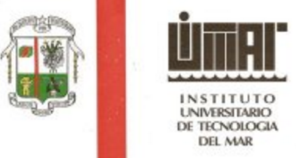
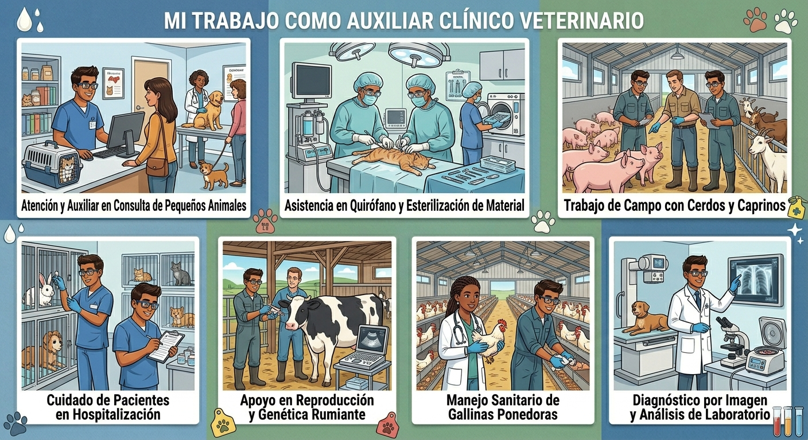
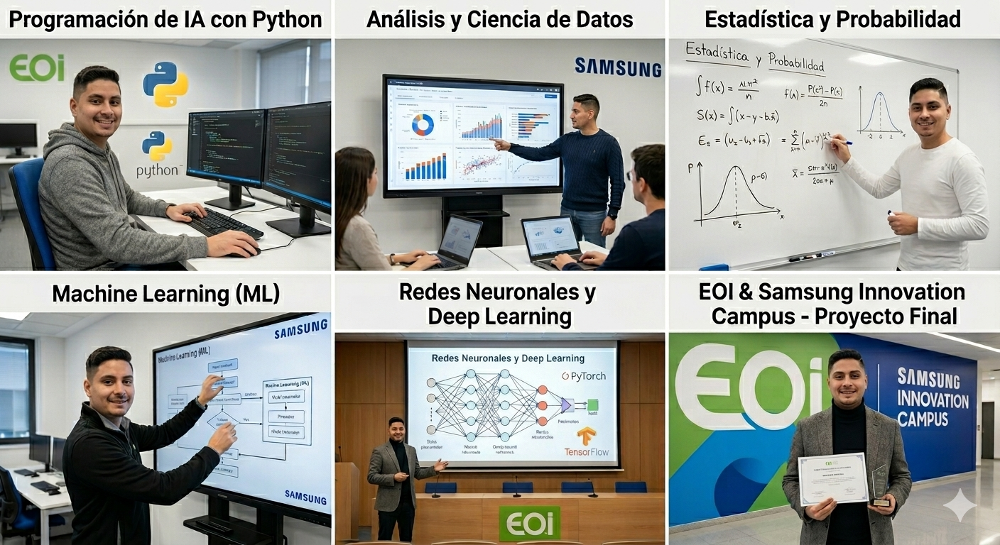
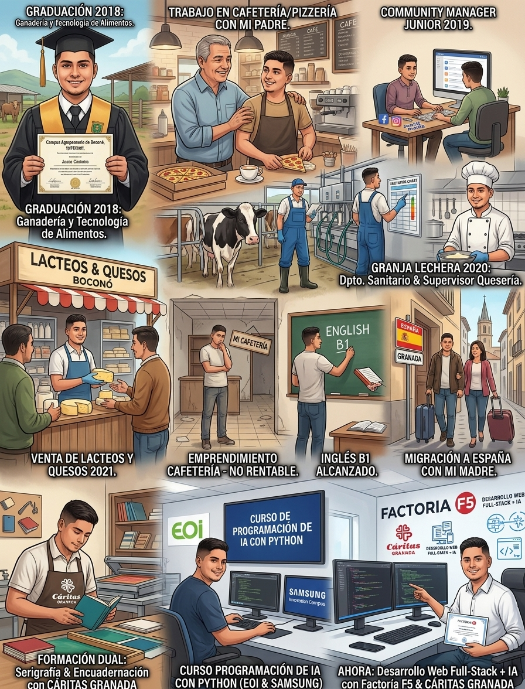

Nombre y Apellidos: Oscar Mauricio Mejía Pernía


Lugar de Nacimiento: Valencia, Carabobo, Venezuela

Nacionalidad: Venezolana

- Leer libros de desarrollo personal, salud emocional y alguna novela
- Escuchar música
- Ver documentales y series en streaming
- Scrollear un poco en redes sociales
- Ver videos interesantes en YouTube sobre filosofías orientales, noticias, entre otros temas
- Senderismo
- Ir de bares y tapas

Título: Diplomatura Universitaria en Ganadería y Tecnología de Alimentos
Institución: Instituto Universitario de Tecnología del Mar (IUTEMAR) - Campus Agropecuario de Boconó, Estado Trujillo, Venezuela

Curso de Auxiliar Clínico Veterinario

Curso de Programación de IA con Python

Estudié y me gradué de una diplomatura universitaria en Ganaderia y Tecnología de Alimentos en 2018 en el Campus Agropecuario de Boconó (Los Andes) del Instituto Universitario de Tecnologia del Mar (IUTEMAR) en Venezuela, luego trabajé con mi padre en su cafetería y pizzeria, al año siguiente laboré como Community Manager Junior para una empresa de marketing digital, más adelante, en 2020, trabajé en una finca de ganado lechero como asitente del departamento de sanidad y luego como operario y supervisor de la quesería y de la unidad de transformación de la leche de la granja, después, en 2021, laboré en venta de lácteos y quesos. Así mismo, ese mismo año puse en marcha un pequeño emprendimiento de una cafeteria pero finalmente no funcionó lo suficientemente bién como para mantenerse en el tiempo y mantener una rentabilidad. Por otro lado, al año siguiente hice dos niveles de inglés para alcanzar un B1. Finalmente, migré a España con mi madre en 2023 y una vez aquí hice una formacion dual corta y muy práctica de serigrafía y encuadernación con Caritas de Granada, luego en 2025 el curso de auxiliar clínico veterinario y sus respectivas prácticas. Entre 2025 y 2026 realicé un curso de programación de IA con Python con la Escuela de Organización Industrial y Samsung Innovation Campus y ahora mismo estoy participando de una formación de desarrollo web full-stack + IA con la empresa Factoria F5 y Cáritas de Granada.
